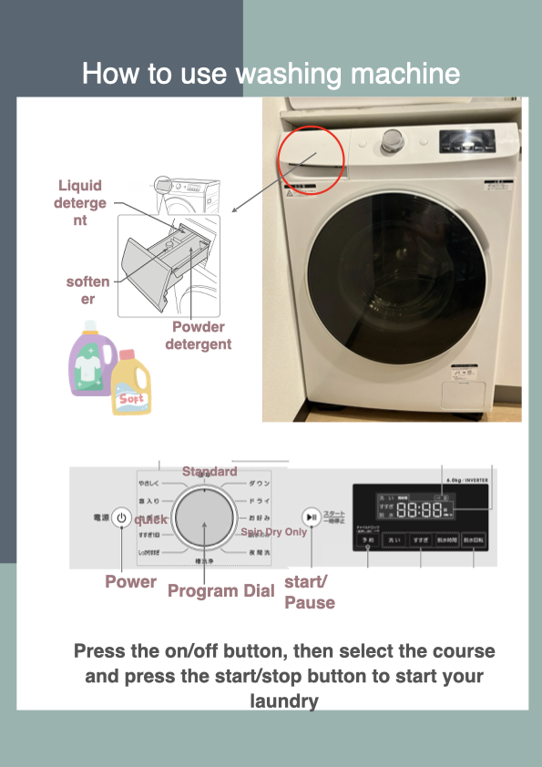
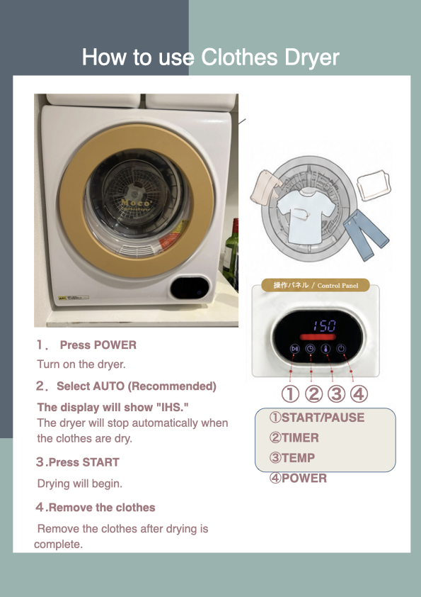

Detergent goes in the back compartment and fabric softener goes in the front compartment. After selecting the course, press START/PAUSE.洗剤は奥、柔軟剤は手前の投入口に入れてください。コースを選んだあと START/PAUSE を押します。洗涤剂放后侧，柔顺剂放前侧。选择程序后按 START/PAUSE。세제는 안쪽, 섬유유연제는 앞쪽 투입구에 넣고 코스를 고른 뒤 START/PAUSE 를 누르세요.Mettez la lessive dans le compartiment du fond et l'assouplissant dans le compartiment avant. Après avoir choisi le programme, appuyez sur START/PAUSE.Ponga el detergente en el compartimento trasero y el suavizante en el compartimento delantero. Después de elegir el programa, pulse START/PAUSE.

Turn the dryer on with POWER, then choose AUTO for the recommended setting.POWER で電源を入れ、基本的には AUTO を選ぶのがおすすめです。按 POWER 开机，通常建议选择 AUTO 模式。POWER 로 전원을 켠 뒤 기본적으로 AUTO 모드를 추천합니다.Allumez avec POWER puis choisissez AUTO, le mode recommandé.Encienda con POWER y normalmente use AUTO, que es el ajuste recomendado.
Press START to begin drying. After the cycle ends, remove the clothes once the machine unlocks.START を押すと乾燥が始まります。終了後、ロック解除を確認してから洗濯物を取り出してください。按 START 开始烘干。程序结束并解锁后再取出衣物。START 를 누르면 건조가 시작됩니다. 종료 후 잠금이 풀리면 옷을 꺼내세요.Appuyez sur START pour lancer le séchage. Retirez le linge après la fin du cycle et le déverrouillage.Pulse START para comenzar el secado. Saque la ropa cuando termine el ciclo y se desbloquee la máquina.